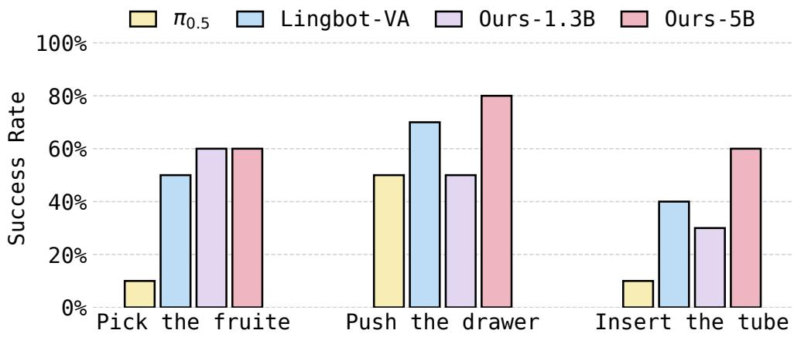

(c) Representation Visual-Action Tokenizer Figure 1 Overview of our representation visual-(c) Representation Visual-Action Tokenizer Figure 1 Overview of our representation visual-action tokenizer, which aligns visual latents with a frozen visual foundation model to obtain semantically rich visual tokens, and induces latent actions as transitions within this shared semantic space via coupled inverse and forward dynamics models.这张图概括 RepWAM 的整体方法流程。阅读时先看模块之间传递的训练信号，再看作者如何把目标拆成可优化的子问题。

Figureure 2 · Real-world success rate (10 rollouts per task) on three manipulation tFigure 2 Real-world success rate (10 rollouts per task) on three manipulation tasks, comparing ??0 5 [4] and Lingbot-VA [20] against our 1 3B and 5B WAMs.这张图来自论文 PDF 的结构化抽取。当前用于辅助理解 RepWAM 的方法或实验，请结合正文精读段落一起看。